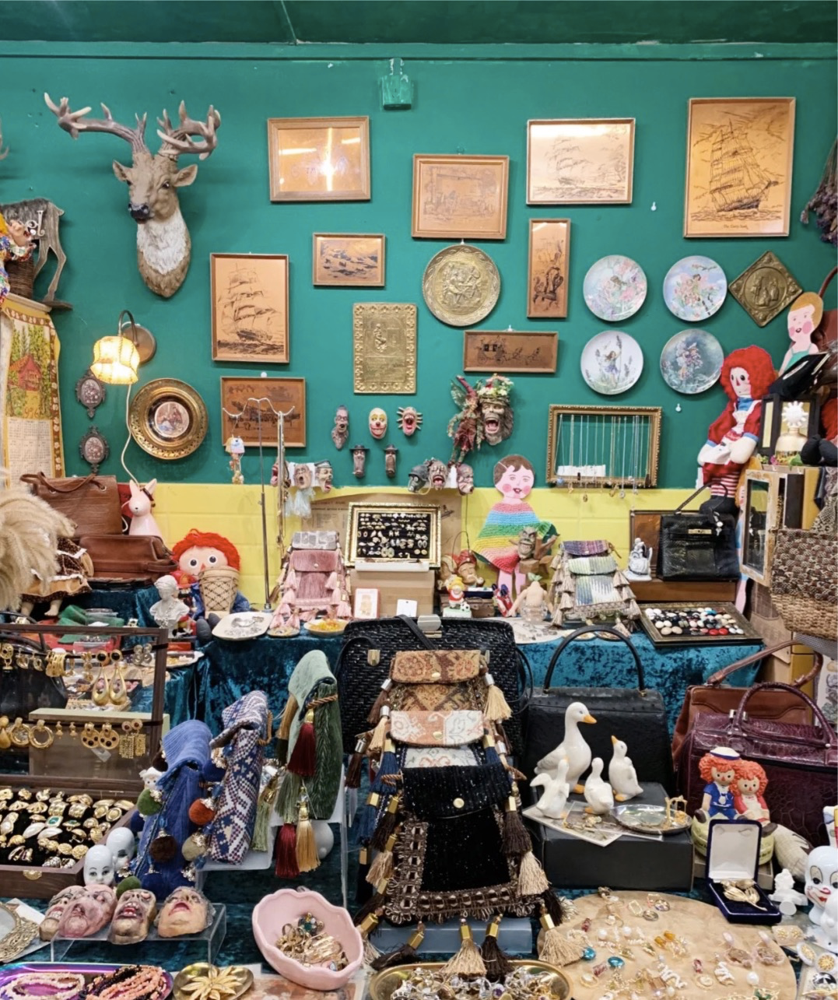
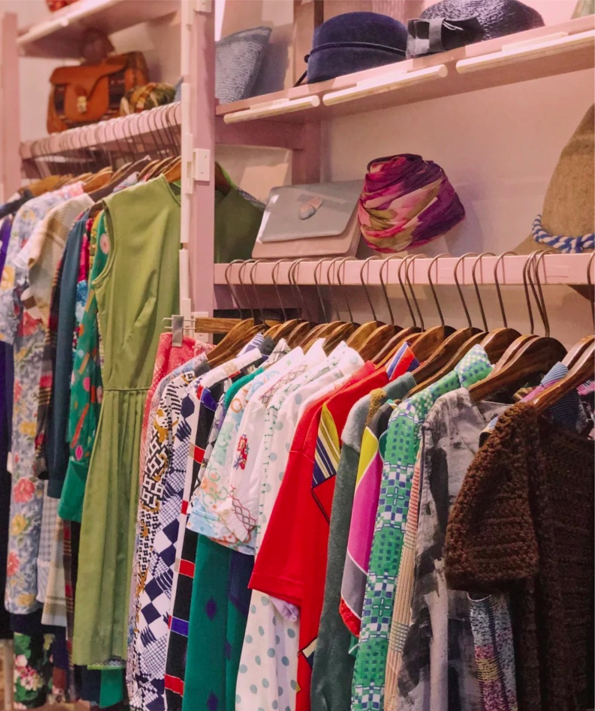

Home / GuangZhou
Vintage market in GuangZhou |
|
|---|---|
|  |
Journey ShopLocation: No. 1, Feng'an Second Street, Gexin Road, Haizhu District, GuangzhouDescription: A small shop integrating originality and vintage, The store sells all kinds of middle-aged bags and jewelry. The store is miniature and exquisite, and it is a treasure house. |
Tres Bon VintageLocation: 3rd Floor, No. 9 Heping Road, Huaqiao New Village, Yuexiu District, GuangzhouDescription: The proprietress is in France and the shop is in Guangzhou. I often buy back European second-hand gadgets, A lot of cute accessories, brooches, posters, postcards, clothes, shoes and bags. |

|
|  |
vintage BoutiqueLocation: 3 Yandun Road, GuangzhouDescription: Old red-brick bungalows over 80 years old, A lot of retro goodies and out-of-print second-hand bags. There is also a gothic room, A must for cool punch card. |